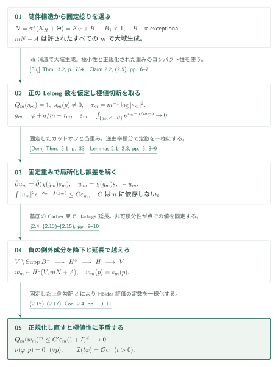
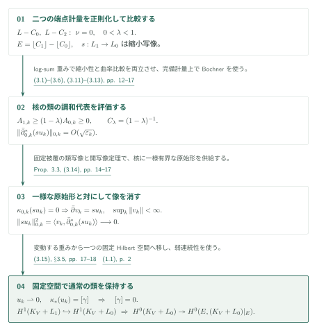
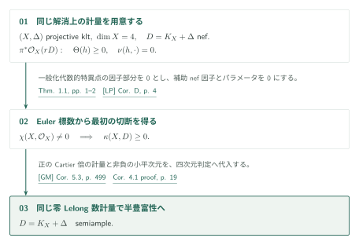

Minimal metrics and interior injectivity for nef adjoints
AI生成の一次概説。以下の定理は原稿著者OpenAIの主張を紹介するもので、編集側による正しさの認定ではない。重要な主張・証明は原論文で確認されたい。
カタログ034内の掲載順05（内部ID minimal-metrics-injectivity）。原稿は2026年9月27日版、全21ページ、参照commitは adc7f1241b42e322a6451854ab7e4b4c146bf78a。原典PDFの閲覧ページ。
本稿は二つの解析的入力を供給する。第一はnefなklt随伴束の極小特異計量のLelong数消滅であり、固定したample捻りを持つ極値切断の局所化から導く。第二は零Lelong数の端点計量を仮定する内部境界の通常の \(H^1\) 単射性であり、重み付き調和代表の評価を固定Hilbert空間と通常のコホモロジーへ戻して証明する。第二の証明は第一を用いない。
主要結果
Theorem 1.1 — nef klt随伴の極小計量（pp. 1–2）
\((H,\Theta)\) を正規・連結な複素射影klt対、\(\Theta\geq0\) を有理因子とし、\(D_H=K_H+\Theta\) はnefな \(\mathbb Q\)-Cartier因子とする。任意の射影的対数解消 \(\pi:V\to H\) に対し、実際の有理線束 \(N=\pi^*D_H\) 上に半正曲率を持つ極小特異計量が存在し、そのような計量はすべて各点でLelong数が0となる。\(K_H\) と \(\Theta\) を個別に \(\mathbb Q\)-Cartierと仮定しない。Theorem 1.1, pp. 1–2
Theorem 1.2 — 内部境界の単射性（p. 2）
\(V\) は滑らかな複素射影多様体、\(L\) は整因子、\(0\leq C_0\leq C_2\) は合併した台がSNCとなる有効有理因子とする。双方の実際の有理線束 \(L-C_0,L-C_2\) が、半正曲率かつ全点で零Lelong数の特異Hermite計量を持つと仮定する。有理数 \(0<\lambda<1\) に対し
とおけば、自然な包含が誘導する写像
は単射である。Theorem 1.2, p. 2
Corollary 2.4 — 乗数イデアル（pp. 10–11）
Theorem 1.1の仮定の下で極小重み \(\varphi\) に対し \(\mathcal I(t\varphi)=\mathcal O_V\) がすべての実数 \(t>0\) で成り立つ。極小計量の選択にも、重みを正規化するCartier倍にも依存しない。Corollary 2.4, pp. 10–11
Corollary 4.1 — Euler標数が非零の四次元（p. 18）
\((X,\Delta)\) は複素射影klt四次元対、\(\Delta\geq0\) は有理境界、\(D=K_X+\Delta\) はnefとする。\(\chi(X,\mathcal O_X)\ne0\) ならば \(D\) はsemiampleである。数値次元への制限はなく、Euler標数の仮定は最初の切断を得る段階に用いる。Corollary 4.1, pp. 18–19
Theorem 1.1の証明戦略

解消上では \(N=K_V+B\)、\(B\) の係数はすべて1未満、負の部分は \(\pi\)-例外的である。この負の部分を捨てることはできない。\(b=[B]\) とすると \(e^{-b}\) は可積分であり、固定捻り \(A=\pi^*((n+1)H_0)\) によってすべての許された \(m\) で \(mN+A\) を大域生成にする。ここで「許された」は \(mD_H\) がCartierであることを指す。原稿§2.2はNadel消滅とCastelnuovo–Mumford正則性を使う。
正のLelong数を持つ点 \(p\) があるとして、
という正規化の下で \(p\) での値を最大にする \(s_m\) を選ぶ。\(\tau_m=m^{-1}\log|s_m|^2\) の部分列極限と極小性 \(\tau_\infty\leq\varphi+C\) により、\(g_m=\varphi+a/m-\tau_m\) の固定劣位集合 \(\{g_m<-R\}\) 上の随伴質量 \(\varepsilon_m\) は0へ行く（Claim 2.2、式(2.5)）。
Lemma 2.3はこの小さな質量から、カットオフした切断の \(\bar\partial\) 誤差を \(m\) に依らない定数で解く。正のLelong数を使って重み \(e^{-c\varphi-b}\) を \(p\) で非可積分にしておくと、補正後の正則切断 \(w_m\) は \(w_m(p)=s_m(p)\) を満たす。負の例外成分をまたぐ延長は解消上の局所評価で済ませず、正規な基底 \(H\) 上のCartier束へ降ろし、余次元2のHartogs延長を施してから引き戻す（§2.4, pp. 9–10）。
最後のHölder評価は \(Q_m(w_m)^m\leq C'\varepsilon_m(1+I)^d\to0\)。ここでは \(I=\int_Ve^{\varphi-b}<\infty\)、\(d\) は固定である。従って \(w_m\) を \(Q_m=1\) に戻すと \(p\) での値が増し、極値性に矛盾する。Corollary 2.4はこの結論にSkoda可積分性を適用する帰結である。局所化補題の特異重みへの極限操作全体は本初稿で独立検証していない。
Theorem 1.2の証明戦略

端点計量を正則化して曲率の損失を \(\varepsilon_k\to0\) に抑え、固定指数における指数重みの一様可積分性を残す（Lemma 3.1）。端点の重みにlog-sumを施す式(3.1)–(3.3)により、\(E=\lfloor C_1\rfloor-\lfloor C_0\rfloor\geq0\) の標準切断による \(s:L_1\to L_0\) を縮小写像にし、SNC台の補集合上で
を得る。\(\lambda<1\) がBochner比較の定数 \(C_\lambda=(1-\lambda)^{-1}\) を有限にするため、端点 \(\lambda=1\) へ拡張した主張ではない。
核心はProposition 3.3である。固定した有限被覆上の局所 \(L^2\) 原始形の差を正則Čech cocycleにし、SNC因子を越えて延長する。通常の \(H^1(V,K_V\otimes F)\) への連続な類写像 \(\kappa_k\) は完全形式の閉包を殺す。さらにその核に対して、一つの固定Fréchet開写像による分解評価から、\(k\) に依らないノルムで大域原始形を取れる。全Fréchet seminormで同時に有界な持ち上げを主張しているわけではない。
核の類の調和代表 \(u_k\) にBochner比較を適用すると、\(\|\bar\partial^*_{0,k}(su_k)\|=O(\sqrt{\varepsilon_k})\)。Proposition 3.3の一様有界な \(v_k\)、\(\bar\partial v_k=su_k\)、と対にして \(\|su_k\|_{0,k}\to0\) を得る。ここだけでは元の通常の類を消したことにならない。式(3.15)で全代表を固定Hilbert空間へ入れ、\(u_k\rightharpoonup0\) と連続な固定類写像 \(\kappa_*u_k=[\gamma]\) を両立させて初めて \([\gamma]=0\) とする（§3.5, pp. 17–18）。
切断持ち上げは別の解析定理を要しない。完全列
の接続写像が0なので、\(E\ne0\) なら \(H^0(V,K_V+L_0)\to H^0(E,(K_V+L_0)|_E)\) は全射となる（式(1.1), p. 2）。これは非被約も許す因子スキーム全体についての結論である。
Corollary 4.1の証明戦略

Theorem 1.1の計量を実際の束 \(\pi^*\mathcal O_X(rD)\) 上へテンソル冪で移す。同じ計量がLP, Corollary D, p. 4のgeneralized algebraic singularities条件を因子部分0で満たし、補助nef因子を0、パラメータを0として \(\kappa(D)\geq0\) を得る。次にGM, Corollary 5.3, p. 499が同じ零Lelong数計量とこの非消滅からsemiamplenessを与える。本稿のTheorem 1.2はこの帰結の入力ではない。
外部入力とカタログ内の接続
| 入力 | 本稿の使用箇所と役割 | 今回の照合 |
|---|---|---|
| Fuj, Theorem 3.2, p. 734（PDF p. 8） | §2.2, p. 6。kltなので乗数イデアルは自明。nef随伴とample差から消滅を得て固定捻りを大域生成にする。 | 入力の記述・代入を照合。正則性定理自体の原典は未照合。 |
| Dem, Theorem 5.1, p. 33 | Lemma 2.1, p. 5 → Lemma 2.3およびProposition 3.3。完備Kähler上の逆曲率積分による解。 | 利用先の再記述を読解。外部PDF取得不調のため原定理との照合は保留。 |
| Reg, Main Theorem 1.1 とSkoda可積分性 | Lemma 3.1, pp. 11–12。零Lelong数から平滑近似・小曲率損失・固定指数での一様可積分性。 | 利用先の証明を読解。原典の正則化定理・Skodaの原定理は未照合。 |
| LP, Corollary D, p. 4 | Theorem 4.2とCorollary 4.1, p. 19。非零Euler標数から最初の切断。 | 2019年5月7日v4の記述と \(N=0,t=0\) の適用を照合。証明自体は対象外。 |
| GM, Corollary 5.3, p. 499 | Theorem 4.3とCorollary 4.1, p. 19。零Lelong数計量と非消滅からsemiampleness。 | 2017年刊行版の記述・適用を照合。証明自体は対象外。 |
034内ではFourfold nonvanishingのTheorems 4.1–4.2が本稿Theorems 1.1–1.2を再記述し、Proposition 5.1の証明、式(5.9)–(5.10), pp. 18–19で使用する。具体的には解消上の端点残余束をnef klt随伴の正の有理倍と同定してTheorem 1.1を適用し、Theorem 1.2の通常の \(H^1\) 単射性を乗数イデアルの局所消滅で押し下げる。これが被約非klt locus全体からの制限写像の全射性になる。さらにその上に非零切断を作る三次元semi-dlt abundance・貼り合わせ・降下はFN側の追加論証であり、本稿の解析定理だけで供給されるものではない。
原典への入口と確認範囲
- 主張：Theorems 1.1–1.2, pp. 1–2、Corollary 2.4, pp. 10–11、Corollary 4.1, pp. 18–19。
- 証明本文：§2.2–2.4, pp. 5–10の固定捻り・局所化・延長・極値矛盾、§3.1–3.5, pp. 11–18の端点比較・類写像・固定空間への移行、§4の二つの外部判定の適用を読んだ。主定理の数式はPDF p. 2の画像でも照合した。
- 編集側が確認したのは、ここに示した主張・証明箇所・引用適用の対応である。局所化の全極限操作、調和形式の作用素領域と全一様定数、正則化・可積分性の外部原典、外部定理の証明全体は独立検証していない。カタログ内の他の関係は未調査であり、依存なしを意味しない。
- 図のTeX/TikZ原本・日英SVG・確認記録は同梱。公開サイトへの組込みと最終画面確認は本部の作業範囲。